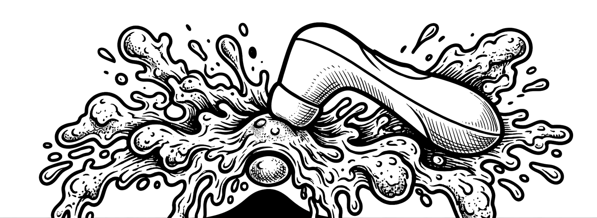
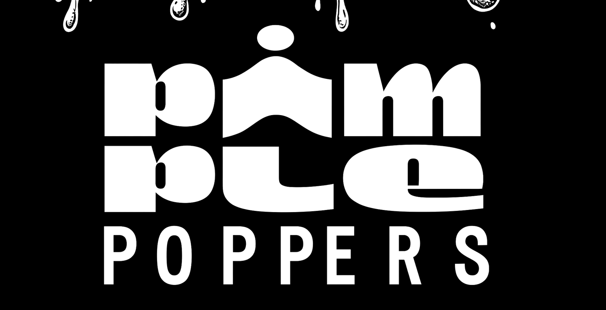
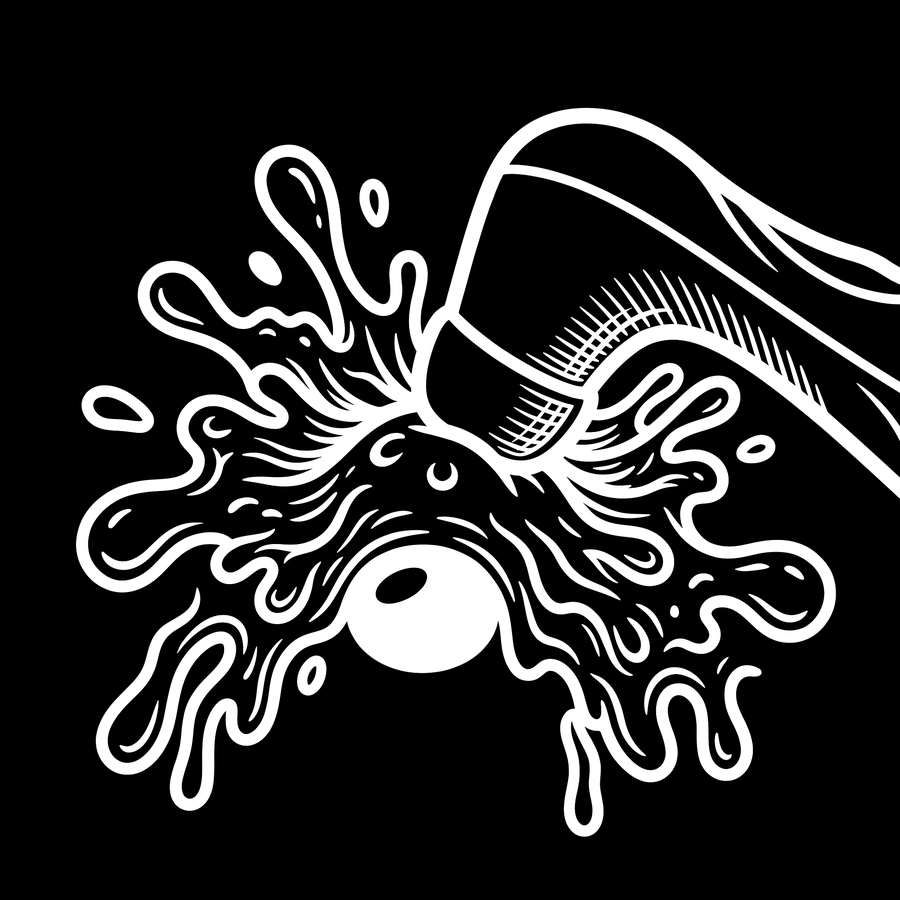

Provisioning & dierbeheer
Uitrol, monitoring en herstel van katten in productie. Inclusief onaangekondigde wekmomenten en katten die buiten het onderhoudsvenster opereren.


Wij verzorgen de volledige technische ondersteuning van animatieproductiehuizen: renderfarms, kleurcontinuïteit, hardware, en het volledige beheer van katten in productie. Eén desk, alles erin — en u hoeft hem niet correct te gebruiken.
beweeg je cursor over de puist
Diensten
Onze dienstverlening is opgebouwd rond de incidenten die zich in een animatiestudio werkelijk voordoen. Elk van onderstaande categorieën is volledig gedocumenteerd in onze kennisbank.
Uitrol, monitoring en herstel van katten in productie. Inclusief onaangekondigde wekmomenten en katten die buiten het onderhoudsvenster opereren.
Wanneer het oranje niet klopt, lossen wij dat op. Streepjescontinuïteit wordt bewaakt over de volledige productie, per frame indien nodig.
Wij nemen over van uw vorige IT-leverancier en zorgen ervoor dat die stopt met antwoorden. De oude helpdesk wordt netjes buiten gebruik gesteld.
Waarom Pimple Poppers
Wij begrijpen dat "bijna klaar" een technische status is, geen inschatting. Onze escalatiematrix houdt daar rekening mee.
Wij hebben uitzonderlijk lang naar uw feedback over ticketsystemen geluisterd en zijn tot de conclusie gekomen dat het probleem nooit de tickets waren.
Onze gemiddelde responstijd is onmiddellijk. In een aantal geregistreerde gevallen was ze negatief.
Zesendertig artikelen, twee talen, één kennisbank. Van wachtwoordbeleid tot de aanbevolen bedelving onder puppy's.

Support
De support desk staat open voor alle medewerkers van de productie. Renderfarm in brand, kat gedraagt zich verdacht, of discussie over de score op de midgetgolf — het hoort allemaal hier thuis.
Dien een ticket in →